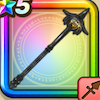

常闇のやり
攻略班 7.0点 / あしばらいまわしげり一閃突き退魔突き月影の大鎌※錬成で強化可能
くわしい特徴
【レベル別習得スキル】 Lv1すばやさ+5【バトルマスター】 Lv1あしばらい（消費MP：4）敵1体に威力120%の体技ダメージを与えたまに転ばせる Lv10まわしげり（消費MP：8）足で周囲をなぎはらい敵全体に威力110%の体技ダメージを与える Lv15一閃突き（消費MP：18）敵1体に30%の確率で斬撃ダメージの会心の一撃を与える。こころや心珠で会心率を上げても影響を受けない。 Lv20退魔突き（消費MP：19）悪魔系に威力330%、それ以外の系統には威力270%のドルマ属性斬撃ダメージを与える Lv30月影の大鎌（消費MP：24）闇の力で刃を生み出し、敵全体に威力245%のドルマ属性斬撃ダメージを与える Lv35悪魔系へのダメージ+5% Lv40悪魔系へのダメージ+5% Lv45攻撃時+2%の確率で混乱を与える Lv50攻撃力+12錬成スキル改1退魔突き改（消費MP：25）悪魔系に威力380%、それ以外の系統には威力320%のドルマ属性斬撃ダメージを与え、まれに感電を付与する改2月影の大鎌改（消費MP：31）敵全体に威力280%のドルマ属性斬撃ダメージを与える改3悪魔系へのダメージ+10%改4錬成ぶき特別演出解放・メガモン討伐結果発表時に特別演出が追加・武器の見た目に特別なエフェクトが追加 【限界突破スキル】 1凸スキルの斬撃・体技ダメージ+5% 2凸スキルの斬撃・体技ダメージ+5% 3凸スキルの斬撃・体技ダメージ+5% 4凸スキルの斬撃・体技ダメージ+5%